#387 odakyu-1000
✅ 已推
✅ 已推 提交
0881229e（models-pipeline）MC 原话：胶耳未清
根因：端件裁切框把纸模粘贴耳（のりしろ）框进贴图，端盖 UV 拉满车宽后在司机面两侧形成通高白竖条；贴图问题，非几何。面宽约 70%。
修法：端件框横向收紧到端面轮廓、只取端面本身，裙板白纸残留同步清；手术式 GLB 补丁，只换内嵌贴图，几何逐字节未动。car2 共用 car1 全部 4 张贴图，同改。
图加载失败
'">修后
#388 odakyu-30000
✅ 已推
✅ 已推 提交
8f1183f1（models-pipeline）MC 原话：胶耳未清
根因：端件裁切框把纸模粘贴耳框进贴图，端盖 UV 拉满车宽后在司机面两侧形成通高白竖条；贴图问题，非几何。6 辆编组。
修法：端件框横向收紧到端面轮廓、只取端面本身，裙板白纸残留同步清；手术式 GLB 补丁。car2–car5 的 end1 与各自 front 共用，同改。

修后
#389 odakyu-4000
✅ 已推
✅ 已推 提交
c9da609d（models-pipeline）MC 原话：胶耳未清
根因：端件裁切框把纸模粘贴耳框进贴图，端盖 UV 拉满车宽后在司机面两侧形成通高白竖条；贴图问题，非几何。单辆车。
修法：端件框横向收紧到端面轮廓、只取端面本身；司机端裙板梯形窄耳改 fill 逐行填邻近面色（crop 会拉伸车钩罩）。

修后
#390 odakyu-5000
✅ 已推
✅ 已推 提交
bc575a8a（models-pipeline）MC 原话：胶耳未清
根因：端件裁切框把纸模粘贴耳框进贴图，端盖 UV 拉满车宽后在司机面两侧形成通高白竖条；贴图问题，非几何。
修法：端件框横向收紧到端面轮廓、只取端面本身，裙板白纸残留同步清；手术式 GLB 补丁。car2 共用 car1 全部 4 张贴图，同改；裙板窄耳 fill。

修后
#391 odakyu-60000
✅ 已推
✅ 已推 提交
f307c96f（models-pipeline）MC 原话：其他：这个车是楔形的
根因：第一轮 OT-1 的 GLB warp（R=0.55）不够：原版前盖是 29 三角扇形，warp 只能把它顶成带硬折的帐篷（拱形折线就是扇形边）；且前脸/裙板贴图就是纸模端件 1:1，折叠拱线、白耳、矩形贯通门全在图上，warp 去不掉。…
修法：第二轮从原版 GLB 重做：25×15 分级网格新前盖（625 tris）＋C1 平滑 warp（车顶后移 0.50 m）＋前脸/裙板/侧面鼻端贴图按实车重画（双片圆角风挡、雨刮、LED 行显、车钩凹口、前灯）；…
🔁 第二轮重建：修后图为第二轮重建渲染（非第一轮 OT-1 旧渲染）。

修后
#392 odakyu-70000
✅ 已推
✅ 已推 提交
2de32a62（models-pipeline）MC 原话：其他：这个车是楔形的
根因：与 #404 同一辆小田急70000形 GSE（异名重复 slug）；front 贴图是同一张鼻锥件但上下颠倒（翻转后平均绝对差 20.9、不翻转 57.6），同样有空矩形框＋2 红圆点“控制面板”＋空白显示器状风挡＋下方大块灰平板；…
修法：第二轮删后重建（与 #404 同法，MC 14:34 授权“按实际情况做决断”）：删 commit 8f76cc1a（index 663→662），再从同一张图纸从头重建（loft 光滑流线展望头，…
🔁 第二轮重建：修后图为第二轮重建渲染（非第一轮 OT-1 旧渲染）。

修后
#393 odakyu-8000
✅ 已推
✅ 已推 提交
c5aade98（models-pipeline）MC 原话：胶耳未清
根因：端件裁切框把纸模粘贴耳框进贴图，端盖 UV 拉满车宽后在司机面两侧形成通高白竖条；贴图问题，非几何。3 辆编组。
修法：端件框横向收紧到端面轮廓、只取端面本身，裙板白纸残留同步清；手术式 GLB 补丁。car2 end1 共用 car2 front、car3 front/skirt 共用 car1。…

修后
#397 osakametro-30000
✅ 已推
✅ 已推 提交
75f28263（models-pipeline）MC 原话：胶耳未清
根因：端件裁切框把纸模粘贴耳框进贴图，端盖 UV 拉满车宽后在司机面两侧形成通高白竖条；贴图问题，非几何。面约 72–73%。
修法：端件框横向收紧到端面轮廓、只取端面本身，裙板白纸残留同步清；手术式 GLB 补丁，只换内嵌 PNG，不重建，几何零改动（三角数 11,126 不变）。共享贴图同改一次（car2 front＝end1）。

修后
#398 osakametro-70
✅ 已推
✅ 已推 提交
1e167d99（models-pipeline）MC 原话：其他：く
根因：纸模端盖是全平直竖板，く只画在侧面贴图里。
修法：く warp R≈0.29（图纸车顶后收 0.56 m 有夸大，照片折角较缓，取照片值；车顶中心 −0.276、边缘 −0.293、裙板 −0.013）。
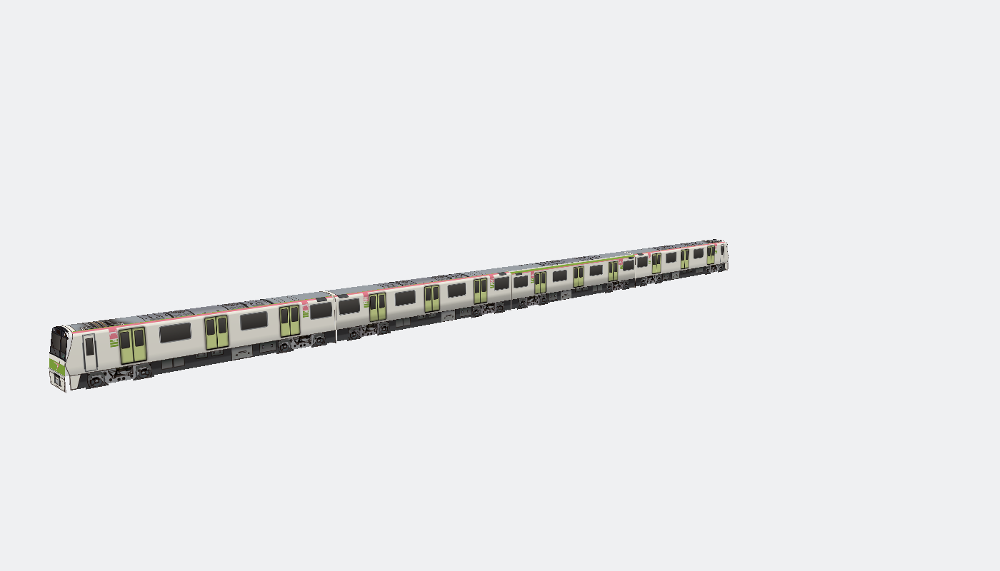
图加载失败修后
#399 osakamono-3000
✅ 已推
✅ 已推 提交
65b82278（models-pipeline）MC 原话：编组错误
根因：实车 4 辆，模型只有 2 辆，缺 3300 中间车与 3400 尾端司机车。
修法：补 car3（3300 中间车）、car4（3400 翻转司机车），2→4 辆；原 car_length_m 是列表 [15.76, 14.48]（站内 lenOf 取到列表会变 NaN），…

修后
#400 osakanewtram-200
✅ 已推
✅ 已推 提交
7a5e3f26（models-pipeline）MC 原话：其他：斜车头
根因：纸模端盖是全平直竖板，斜头只画在侧面贴图里。
修法：斜头 warp R＝0.50（图纸斜度仅 0.10 m、远小于照片，按照片取；车顶中心 0.499、边缘 0.549、腰线边缘 0.378、裙板边缘 0.192）；内端（贯通端）不动。…
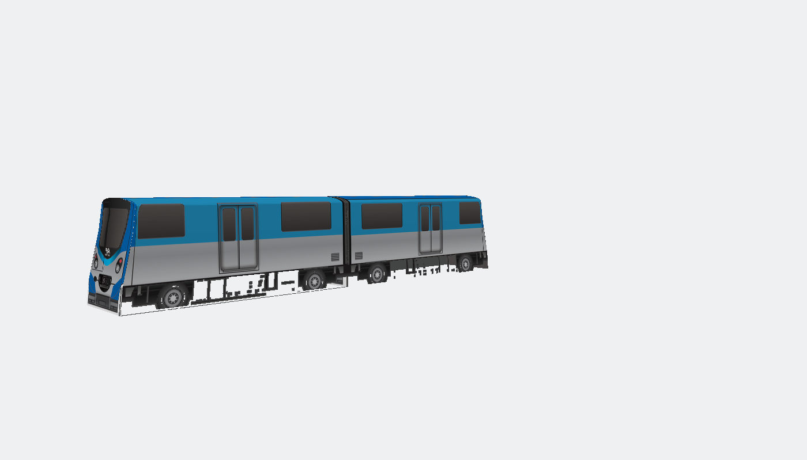
图加载失败修后
#404 osakyu-70000
✅ 已推
✅ 已推 提交
ccb413d8（models-pipeline）MC 原话：其他：编组错误 而且是尖头车
根因：第一轮 OT-1 只修了编组（car2 重建为 Tc）＋尖头 warp R=0.55，但前脸仍错：纸模鼻锥件是折叠展开图不是立面图，拍平后红司机面板（空矩形框＋2 圆点）像控制面板、大块深色梯形像空白显示器，折叠线横切风挡；…
修法：第二轮删后重建：删 commit 73b796d0（index 663→662），再从图纸从头重建（loft 光滑流线展望头，底边下探到 y=1.15 m＋后倾前裙板，前脸按实车重画：整块全景风挡、无电脑面板、无横线切断玻璃）；…
🔁 第二轮重建：修后图为第二轮重建渲染（非第一轮 OT-1 旧渲染）。

修后
#405 oumi-900
✅ 已推
✅ 已推 提交
99545895（models-pipeline）MC 原话：其他：斜头车
根因：纸模端盖是全平直竖板，斜头只画在侧面贴图里；辆数对（2 辆编成）。
修法：斜头 warp R＝0.30 纯后倾（无 plan 折角，ja.wikipedia 西武101系「前面单平面后倾」核实），两端头车。涂装旧「淡海号」深蓝未动（MC 只判斜头）。
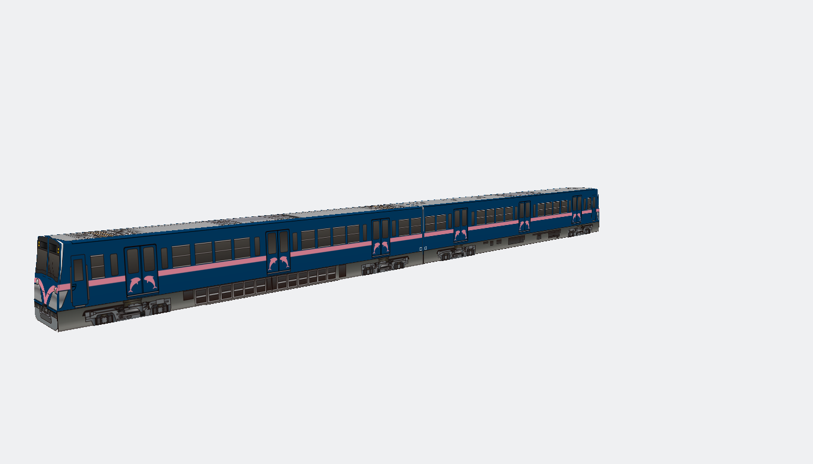
图加载失败修后
#407 sagano-de10
⛔ 未返工
⛔ 未返工——未推：无可翻贴图，图纸内容错误（机车罩画黑 vs 实车红、驾驶端玻璃画黑菱形网纹 vs 实车全景玻璃），翻转修不了；MC 14:34 指令先不做（暂缓）
MC 原话：贴图颠倒
根因：MC 判贴图颠倒，但全部 16 张贴图逐面核查均正立，无可翻贴图；肉眼可见的两处毛病是图纸内容错误——机车罩画成黑色（实车 DE10 1104 红色）、SK200 驾驶端玻璃画成黑色菱形网纹板（实车为全景玻璃）；侧面头徽正立，竖翻会翻倒。
修法：未推（图纸内容错误、翻转修不了）：机车罩画黑 vs 实车红、驾驶端玻璃画黑菱形网纹 vs 实车全景玻璃；需重绘/改色（建模重做范畴）。MC 14:34 指令先不做（暂缓）。详见 tx-1/REPORT_sagano-de10.md.

现状图（未返工）
#411 sanki-801
✅ 已推
✅ 已推 提交
575f1fe1（models-pipeline）MC 原话：胶耳未清
根因：端件裁切框把纸模粘贴耳框进贴图，端盖 UV 拉满车宽后在司机面两侧形成通高竖条；贴图问题，非几何。贯通门耳是黄色的（RGB≈233,196,109），判据是轮廓线外＋无面部内容＋翻折线，不是颜色。
修法：端件框横向收紧到端面轮廓、只取端面本身，裙板白纸残留同步清；手术式 GLB 补丁。共享贴图同改一次（car2 front＝end1）。
图加载失败
'">修后
#413 sanyo-3000
✅ 已推
✅ 已推 提交
61c27863（models-pipeline）MC 原话：胶耳未清
根因：端件裁切框把纸模粘贴耳框进贴图，端盖 UV 拉满车宽后在司机面两侧形成通高竖条；贴图问题，非几何。面约 80%。
修法：端件框横向收紧到端面轮廓、只取端面本身，裙板白纸残留同步清；手术式 GLB 补丁。car2 skirt_gang_top2 有一条预存全宽横向白带（贴图 22–61 行），不是胶耳，在内侧端面，原样保留。
图加载失败
'">修后
#414 sanyo-5000
✅ 已推
✅ 已推 提交
32a31aa3（models-pipeline）MC 原话：胶耳未清
根因：端件裁切框把纸模粘贴耳框进贴图，端盖 UV 拉满车宽后在司机面两侧形成通高竖条；贴图问题，非几何。面约 65%。
修法：端件框横向收紧到端面轮廓、只取端面本身；梯形裙板（skirt_cab_top1）裁切＋按行填色 2,783 px；手术式 GLB 补丁。共享贴图同改（car2/car3 裙板）。

修后
#415 sanyo-5030
✅ 已推
✅ 已推 提交
a6205cfe（models-pipeline）MC 原话：胶耳未清
根因：端件裁切框把纸模粘贴耳框进贴图，端盖 UV 拉满车宽后在司机面两侧形成通高竖条；贴图问题，非几何。面约 71–72%。
修法：端件框横向收紧到端面轮廓、只取端面本身；裙板比面窄（[89,439) vs 面 [75,451)），按裙板自己边界裁，梯形裙板按行填色各 1,200 px；手术式 GLB 补丁。car1＝car2 全 8 图共享，同改。

修后
#416 sanyo-6000
✅ 已推
✅ 已推 提交
246ea4a3（models-pipeline）MC 原话：胶耳未清
根因：端件裁切框把纸模粘贴耳框进贴图，端盖 UV 拉满车宽后在司机面两侧形成通高白竖条；贴图问题，非几何。司机面＋贯通端双侧空白梯形耳＋裙板白楔，面 72.6–73.2%。
修法：端件框横向收紧到端面轮廓（面 72.6–73.2%→100%）、裙板逐行边白填充；手术式 GLB 补丁，只换内嵌贴图，几何逐字节未变。

修后
#423 seibu-001
⛔ 未返工
⛔ 未返工——未推：无图（实车 8 辆、模型仅 1 辆；全库只有 1 份图纸，缺 7 辆无法补；MC 14:34 授权决断：先接受现有子集，等有图再说）
MC 原话：编组错误
根因：实车 8 辆，模型仅 1 辆 Tc1（クハ001-01）。
修法：未推（无图）：rail-trainpdf 全库 8197 个文件里 001 系只有 1 份图纸（1 辆完整头车＋截断的第 2 辆＋中间车车顶小件），缺 7 辆且中间车（M/T 各型窗门布局不同）与司机车不是同型，无法按图纸补；…

现状图（未返工）
#425 seibu-2000
✅ 已推
✅ 已推 提交
d9e18da6（models-pipeline）MC 原话：其他：这个你自行核查一下编组是否正确
根因：辆数对（8 辆编成），但两端司机面朝内（修前 plain FAIL / site FAIL，2 处司机面↔贯通面错接）。
修法：car1/car8 各绕 Y 转 180°，修后 plain OK / site OK。附带：模型无车号、无受电弓（M1/M3/M5 应有）是图纸/模型既有缺失，不属 verdict 范围，未擅自加。
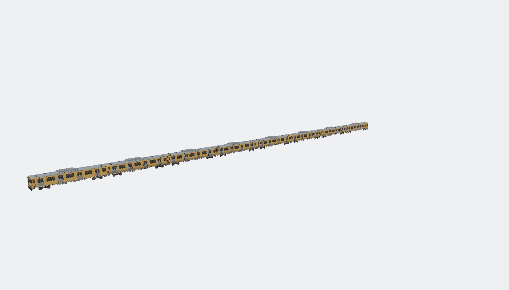
图加载失败修后
#426 seibu-20000
✅ 已推
✅ 已推 提交
12c2df8d（models-pipeline）MC 原话：其他：这个没有其他车厢了吗
根因：原仅 1 辆 Tc1；MC 问“这个没有其他车厢了吗”——实车 8 辆编成 20151F。
修法：补 car2–car8 成 8 辆编成（中間车 car2–7 按立面图手术：司机门→窄窗、去 logo/轮椅标/左端蓝竖条；car8＝car1 绕 Y 镜像；consist.json＋car2–8）。6 辆中間车共用同一 GLB（无受电弓…
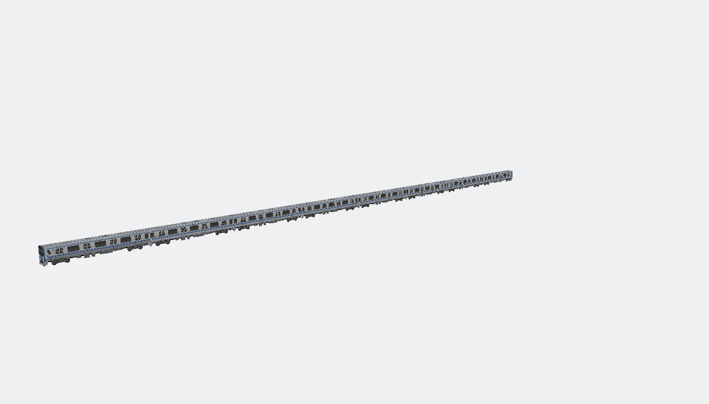
图加载失败修后
#430 seibu-9000
✅ 已推
✅ 已推 提交
17bf14ba（models-pipeline）MC 原话：胶耳未清
根因：端件裁切框把纸模粘贴耳框进贴图，端盖 UV 拉满车宽后在司机面两侧形成通高竖条；贴图问题，非几何。司机面＋贯通端双侧黄色梯形耳（与车身同色）＋裙板白楔，面 69.2% / 75.8–76.0%。
修法：端件框横向收紧到端面轮廓、裙板逐行边白填充；手术式 GLB 补丁。耳片与车身同为黄色，只看“白不白”会漏掉——判据是“面轮廓线之外＋无面部内容＋带翻折线”，不是颜色。
图加载失败
'">修后
#432 senboku-9300
⛔ 未返工
⛔ 未返工——未推：无图（实车 4 辆、模型仅 1 辆；三处图纸来源均无 9300/8300 图；MC 14:34 授权决断：先接受现有子集，等有图再说）
MC 原话：其他：这个没有其他车厢了吗
根因：实车 4 辆编成（9301F），模型仅 1 辆 Mc1，缺 3 辆。
修法：未推（无图）：rail-trainpdf、pepar.net、南海官网纸模页三处均无 9300/8300 图纸，无法补车。MC 14:34 授权决断：先接受现有子集，等有图再说。car1 本身无问题（11,126 tris，0/0/0），…

现状图（未返工）
#433 sendai-sub-1000
✅ 已推
✅ 已推 提交
34316112（models-pipeline）MC 原话：其他：小く
根因：纸模端盖是全平直竖板，小く只画在侧面贴图里；辆数对（4 辆编成：1100 Tc1＋1200 M1＋1300 M2＋1600 Tc2）。
修法：小く warp R＝0.12＋centre_back F＝＋0.12（浅 V＋顶部后倾），两端头车。

修后
#434 sendai-sub-2000
✅ 已推
✅ 已推 提交
52aefb7e（models-pipeline）MC 原话：其他：小く
根因：小く——前脸以伊达政宗兜前立三日月线为界，上部平面、下部曲面，く在下部曲面、幅度小；实车 4 辆、模型 2 辆子集。
修法：从头重做（原 OT-3 专员被拦截，0 改动；凭 MC 14:34 fresh 授权续做）：实车风挡顶与三日月线基本同一垂直面、裙板底部后缩约 0.26 m，标准 R（顶部后移）是反的形状，…
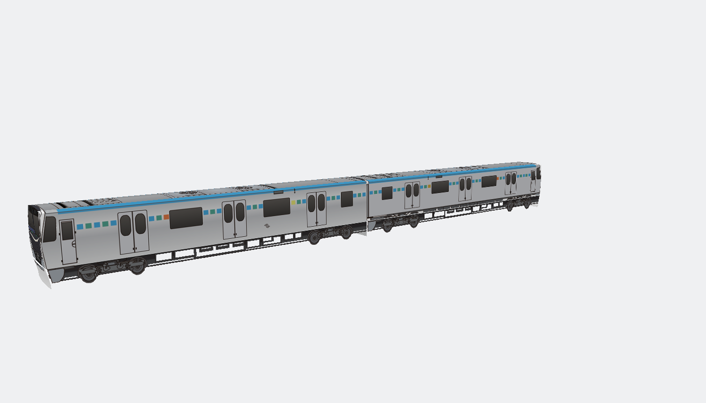
图加载失败修后
#435 sendai-sub-3000
✅ 已推
✅ 已推 提交
47426c87（models-pipeline）MC 原话：其他：小く并且还要检查编组齐了没
根因：小く（先头形状为 1000N 系传承的くの字形，折角明确）；编组不齐——实车 4 辆（3100 Tc1—3200 M1—3300 M2—3600 Tc2），模型只有 2 辆，缺 3200/3300 中间车。
修法：从头重做（原 OT-3 专员被拦截，0 改动；凭 MC 14:34 fresh 授权续做）：只动 car1（3100形 Tc1）唯一司机端 HI，く warp R=0.18、edge_back F=−0.15；只修く、…

修后
#437 shizuoka-a3000
✅ 已推
✅ 已推 提交
6ae050c0（models-pipeline）MC 原话：其他：く
根因：く（FRP 前头、前面非贯通，车端隅柱断面一辺 45°＋风挡后倾，两角向后收）；编组齐全（实车 2 辆，模型 2 辆）。
修法：从头重做（原 OT-3 专员被拦截，0 改动；凭 MC 14:34 fresh 授权续做）：两头司机端（car1 HI、car2 LO）く warp，R=0.18、edge_back F=−0.15；…

修后
#440 sinano-sr1
✅ 已推
✅ 已推 提交
8d6cb0c4（models-pipeline）MC 原话：贴图颠倒
根因：car1＋car2 前脸整面全倒（行先/X 盒在顶、金带在风挡上、红灯在底角、小字倒置在左）。
修法：ROTATE_180（竖翻会把小字留左侧，实车小字在右下）；修后行先顶、灯顶角、风挡居中、金带风挡下、小字正立右下、车钩底，与实车 S102 一致。

修后
#441 sinkeisei-80000
✅ 已推
✅ 已推 提交
db0dc483（models-pipeline）MC 原话：胶耳未清
根因：端件裁切框把纸模粘贴耳框进贴图，端盖 UV 拉满车宽后在司机面两侧形成通高白竖条；贴图问题，非几何。司机面＋贯通端双侧空白梯形耳＋裙板白楔，面 72.3–73.4%。
修法：端件框横向收紧到端面轮廓（面 72.3–73.4%→100%）、裙板逐行边白填充；手术式 GLB 补丁，几何逐字节未变。

修后
#442 sotetsu-10000
✅ 已推
✅ 已推 提交
ff311303（models-pipeline）MC 原话：其他：く
根因：く（E231 系基础，圆滑曲面鼻锥，非折线く）；实车 8/10 辆、模型 2 辆子集。
修法：从头重做（原 OT-3 专员被拦截，0 改动；凭 MC 14:34 fresh 授权续做）：两头司机端（car1 HI、car2 LO）圆滑曲面鼻锥 warp，R=0.17、edge_back F=−0.12（图纸实测鼻锥中高最前、…

修后
#443 sotetsu-11000
✅ 已推
✅ 已推 提交
d144eb3d（models-pipeline）MC 原话：其他：く
根因：く（E233 系基础，前面意匠与 10000 相近，HID 前照灯在车体上部）；实车 10 辆（6M4T）、模型 3 辆子集。
修法：从头重做（原 OT-3 专员被拦截，0 改动；凭 MC 14:34 fresh 授权续做）：car1 HI、car3 LO 两头司机端く warp，R=0.15、…

修后
#444 sotetsu-12000
✅ 已推
✅ 已推 提交
808920f3（models-pipeline）MC 原话：其他：く
根因：纸模端盖是全平直竖板，鼻锥只画在侧面贴图里。
修法：平头 loft 重建为鼻锥几何（top/bot 折线＋鼻尖半宽比 0.92＋鼻尖下 slit panel＋斜裙板；风挡约 20°、鼻尖 y≈2.0）。附带修既存贴图颠倒：car1 front 上下颠倒＋左右镜像，…

修后
#445 sotetsu-13000
✅ 已推
✅ 已推 提交
7aac7034（models-pipeline）MC 原话：其他：く
根因：纸模端盖是全平直竖板，鼻锥只画在侧面贴图里。
修法：平头 loft 重建为鼻锥几何（top/bot 折线＋鼻尖半宽比 0.88＋鼻尖下 slit panel＋斜裙板；风挡约 30° 最陡、鼻尖 y≈1.9）。

修后
#446 sotetsu-21000
✅ 已推
✅ 已推 提交
c7cecd64（models-pipeline）MC 原话：其他：く
根因：纸模端盖是全平直竖板，鼻锥只画在侧面贴图里。
修法：平头 loft 重建为鼻锥几何（鼻尖半宽比 0.90、风挡约 22°、鼻尖 y≈2.0）；swap_caps 修复：car3 的 front 是贯通门、司机面在 end1，交换后重建并核实前脸确为司机面。

修后
#454 titibu-7800
✅ 已推
✅ 已推 提交
94f6af56（models-pipeline）MC 原话：胶耳未清
根因：端件裁切框把纸模粘贴耳框进贴图，端盖 UV 拉满车宽后在司机面两侧形成通高白竖条；贴图问题，非几何。司机面＋贯通端双侧空白梯形耳＋裙板白楔，面 76.1–76.3%。
修法：端件框横向收紧到端面轮廓（面 76.1–76.3%→100%）、裙板逐行边白填充；手术式 GLB 补丁，几何逐字节未变。

修后
#455 tizukyu-hot3500
✅ 已推
✅ 已推 提交
7664dff0（models-pipeline）MC 原话：胶耳未清
根因：端件裁切框把纸模粘贴耳框进贴图，端盖 UV 拉满车宽后在司机面两侧形成通高白竖条；贴图问题，非几何。两端共用一张端面图，仅左侧白耳、面整体右偏约 8%＋裙板单侧白纸，面 84.6%。
修法：裁切 [70,456) 一次修掉左耳并纠正右偏＋裙板填补；两端共用同一张端面图，一次裁切两端同修。手术式 GLB 补丁，几何逐字节未变。

修后
#456 tizukyu-hot7000
✅ 已推
✅ 已推 提交
2af9319a（models-pipeline）MC 原话：编组错误
根因：实车 5 辆，模型 3 辆，缺 7050 中间车与 7010 尾端司机车。
修法：补 car4（7050 中间车）、car5（7010 翻转司机车），3→5 辆；7050 绿车厢段图纸两张中间车净片均无绿带/绿标，只能按普通中间车建。

修后
#457 tobu-100
✅ 已推
✅ 已推 提交
4ddc1c30（models-pipeline）MC 原话：编组错误
根因：实车 6 辆，模型 3 辆，缺 3 辆中间车。
修法：补 car4（M2，p3 新建）、car5/car6（M3/M4，复制 p2），3→6 辆；M2 图纸按 20.2 m 画、实车 20.5 m，模型短 0.3 m。
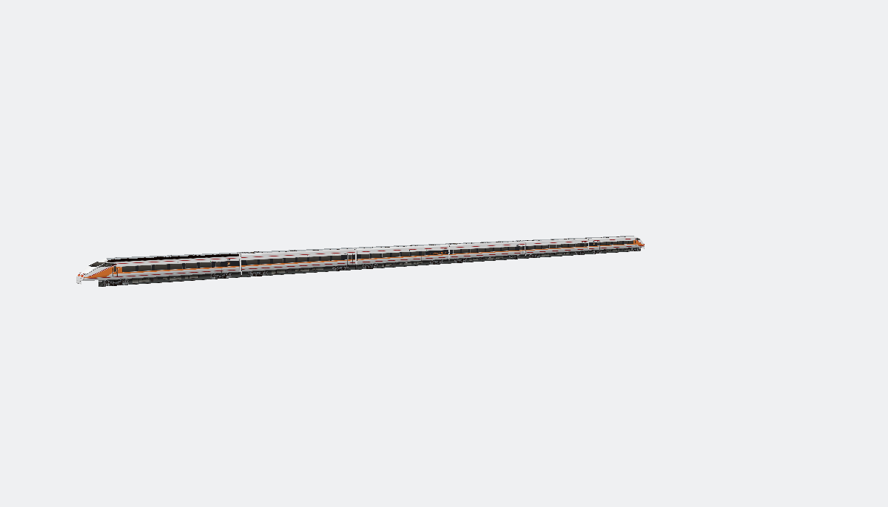
图加载失败修后
#458 tobu-10000
✅ 已推
✅ 已推 提交
be6b140a（models-pipeline）MC 原话：胶耳未清
根因：端件裁切框把纸模粘贴耳框进贴图，端盖 UV 拉满车宽后在司机面两侧形成通高白竖条；贴图问题，非几何。面 70.5%→100%。
修法：端件框横向收紧到端面轮廓、只取端面本身，裙板白纸残留同步清；手术式 GLB 补丁，只换内嵌贴图，POSITION 逐字节与 v1 一致。

修后
#459 tobu-10030
✅ 已推
✅ 已推 提交
3e596d1b（models-pipeline）MC 原话：胶耳未清
根因：端件裁切框把纸模粘贴耳框进贴图，端盖 UV 拉满车宽后在司机面两侧形成通高白竖条；贴图问题，非几何。面 65.5–69.7%→100%。
修法：端件框横向收紧到端面轮廓、只取端面本身，裙板白纸残留同步清；手术式 GLB 补丁，POSITION 逐字节与 v1 一致。

修后
#460 tobu-200
✅ 已推
✅ 已推 提交
54c90b22（models-pipeline）MC 原话：编组错误
根因：实车 6 辆，模型 3 辆，缺 3 辆中间车。
修法：补 car4/car6（M2/M4，复制 p2）、car5（M3，p3 新建），3→6 辆。
图加载失败
'">修后
#461 tobu-20000
✅ 已推
✅ 已推 提交
7201611b（models-pipeline）MC 原话：胶耳未清
根因：端件裁切框把纸模粘贴耳框进贴图，端盖 UV 拉满车宽后在司机面两侧形成通高白竖条；贴图问题，非几何。面 72.1–73.3%→100%。
修法：端件框横向收紧到端面轮廓、裙板白纸残留同步清；手术式 GLB 补丁。接替专员修正了原 v2 的裁切错误：贯通端面原 (0,574) 等于没裁（右耳全留）、裙板按面轮廓 86 px 裁错（真耳界 176–182 px），…
图加载失败
'">修后
#465 tobu-60000
✅ 已推
✅ 已推 提交
75d101bc（models-pipeline）MC 原话：贴图颠倒
根因：单辆 car1 前脸整面全倒。
修法：FLIP_TOP_BOTTOM＋车号“00009”块 vregion 反翻回正立（车号画的是 00009，属图纸画法，不改数字）；旋转 180° 会把灯簇红点换到外侧，故不用。修后行先上、风挡、蓝带＋车号正立、灯带在蓝带下、裙板底，…
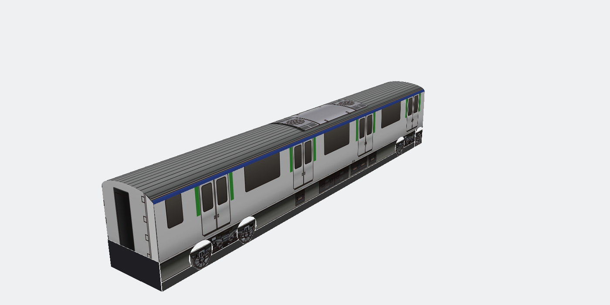
图加载失败修后
#469 tobu-90000
✅ 已推
✅ 已推 提交
3372c6dd（models-pipeline）MC 原话：其他：贴图颠倒 而且胶耳没有清理
根因：整面前脸倒置（蓝在上、表示在裙板里）＋两侧白胶耳。
修法：整图上下翻转（表示/白灯上、风挡中、蓝面下）；重建司机端裙板（蓝尖＋黑联挂框＋暗灰填充）；两侧耳按柱色填补，前脸内部 0 像素改动。⚠️ pepar.net 水印原样保留（只随被去掉的耳瓣一起消失了耳上的字，未另做水印清理；…
⚠️ 端件 pepar.net 水印原样保留，清不清仍待 MC 定夺。

修后
#470 tobu-n100
✅ 已推
✅ 已推 提交
61e9b103（models-pipeline）MC 原话：编组错误
根因：实车 6 辆（4M2T），模型只有 1 辆 Tc；另全量胶耳检查判该车胶耳确认（旧 tabclean 没修掉）。
修法：做 2 辆子集 [Tc][Tc]（(b) 方案，car2＝net1＋FLIP_Y180）；同趟修胶耳（端件框收紧＋clean_tight 银柱色填，右缘白像素 8259→29）；实车 6 辆无图补不满。

修后
#472 toei-5500
⛔ 未返工
⛔ 未返工——未推：无图（实车 8 辆、模型 2 辆；图纸库只有 1 张先头车净片；MC 14:34 授权决断：先接受现有子集，等有图再说）
MC 原话：编组错误
根因：实车 8 辆，模型 2 辆子集 [5501-1 M1c][5501-8 M8c]，缺 6 辆中间车。
修法：未推（无图）：图纸库只有 1 张先头车净片；另一份 tokyotoei_5500_kidou.pdf 是 1954 年都電 PCC 有轨电车，与都营 5500形无关。2 辆子集方向本身正确（diag plain OK / site OK）…

现状图（未返工）
#473 tokyometro-05
✅ 已推
✅ 已推 提交
a181a229（models-pipeline）MC 原话：其他：く
根因：纸模端盖是全平直竖板，鼻锥只画在侧面贴图里。
修法：平头 loft 重建为鼻锥几何（鼻尖半宽比 0.93、风挡约 20°、鼻尖 y≈2.4 蓝带顶部）。car3 既存缺陷：原两端皆贯通门、无司机面，用 tex_from 借 car1 司机面＋司机裙板重建为远端司机车（同第一批 nankai…

修后
#474 tokyometro-07
✅ 已推
✅ 已推 提交
f0f3fce5（models-pipeline）MC 原话：其他：く
根因：纸模端盖是全平直竖板，鼻锥只画在侧面贴图里。
修法：平头 loft 重建为鼻锥几何（鼻尖半宽比 0.95、风挡约 11° 最缓、鼻尖 y≈1.9）；swap_caps 修复：car2 司机面在 end1，交换后重建并核实。
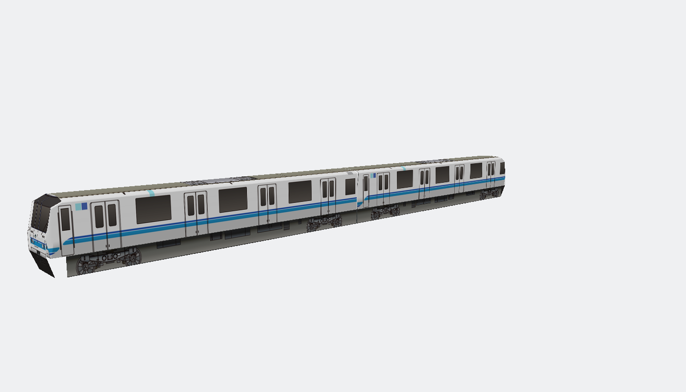
图加载失败修后
#475 tokyometro-10000
✅ 已推
✅ 已推 提交
68ec9742（models-pipeline）MC 原话：编组错误
根因：实车 10 辆，模型 3 辆。
修法：补成 10 辆满编（net2 素中间车＋net3 带弓中间车；car10＝原 car3 改名）。3/9 号車受电弓 1 架 vs 实车 2 架的轻微偏差已注明（有弓优于无弓）。
图加载失败
'">修后
#476 tokyometro-13000
⛔ 未返工
⛔ 未返工——未推：无图（实车 7 辆、模型 2 辆；图纸库只有 1 张先头车净片；MC 14:34 授权决断：先接受现有子集，等有图再说）
MC 原话：编组错误
根因：实车 7 辆，模型 2 辆子集 [CM2][CM1]，缺 5 辆中间车。
修法：未推（无图）：图纸库只有 1 张先头车净片；PDF 的 p2/p3 是 03系，不可用。2 辆子集方向本身正确。

现状图（未返工）
#477 tokyometro-17000
✅ 已推
✅ 已推 提交
8ca5e890（models-pipeline）MC 原话：编组错误
根因：实车 10 辆，模型 2 辆。
修法：补成 10 辆满编（p2 素中间车＋p3 带弓中间车；先头车复用远端返工版字节，圆角く形鼻锥＋真实比例司机面，v1 重建会回退；car2 同名替换为 p2 中间车）。

修后
#478 tokyometro-18000
✅ 已推
✅ 已推 提交
d8601806（models-pipeline）MC 原话：其他：く，然后检查一下编组齐了没
根因：纸模端盖是全平直竖板，く只画在侧面贴图里；另 MC 要求检查编组齐了没。
修法：く warp R＝0.22、edge_back F＝−0.18，两头先头车。编组核查：实车 10 辆、现模型 2 辆子集；原建模 REPORT 称“图纸只有先头车 1 张净片”是错的——同一份图纸（Vayashi tokyometro_1…

修后
#479 tokyometro-9000
✅ 已推
✅ 已推 提交
4ca9521f（models-pipeline）MC 原话：编组错误
根因：旧 3 辆本身方向正确，只缺 3 辆中间车（实车 6 辆）。
修法：新 car4/5/6 克隆 car2，3→6 辆；car3 本身已是翻转到位的尾端司机车，不另翻（硬翻反而修坏）。克隆＝字节复制＋mesh/node 改名，几何/UV/贴图全不动。

修后
#480 tokyotoei-10300
✅ 已推
✅ 已推 提交
4cb55e82（models-pipeline）MC 原话：编组错误
根因：旧 3 辆外端 −Z 是贯通端 FAIL（实车 10 辆）。
修法：补 6 辆中间车＋翻转 car1 作尾端 Tc2，3→10 辆；新中间车一律只克隆 car2——car3 车顶贴图印有两副受电弓（纸模原图问题，实车每辆至多 1 副单臂弓），不扩散；car3 本体未动，留待 MC 定夺。
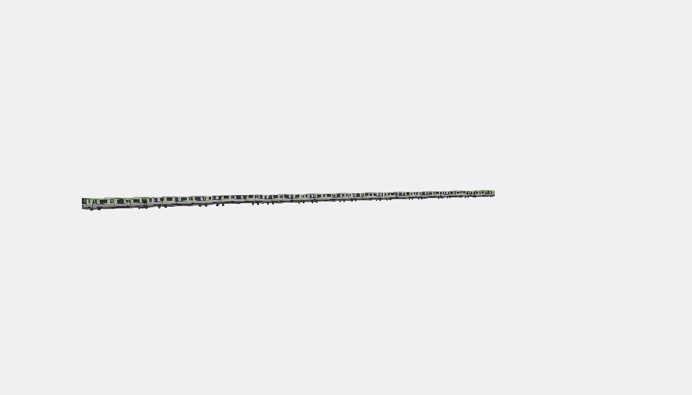
图加载失败修后
#481 tokyotoei-12000
✅ 已推
✅ 已推 提交
33be43e6（models-pipeline）MC 原话：编组错误
根因：旧 2 辆外端 −Z 是贯通端 FAIL（实车 8 辆）。
修法：补 5 辆中间车＋翻转 car1 作尾端 M2c，2→8 辆；楔形头随翻转落到远端。克隆＝字节复制＋mesh/node 改名；翻转＝纯几何绕 Y 轴 180°、UV 与贴图不动。
图加载失败
'">修后
#483 tokyu-2020
✅ 已推
✅ 已推 提交
092e3a82（models-pipeline）MC 原话：贴图颠倒
根因：仅 car1 前脸整面全倒。
修法：flip_band，只翻 rows [0,265)——整幅竖翻会把灯/微笑弧/X 盒/橙角翻到采样区（v∈[0,0.68]）之下、前脸全黑。修后风挡上、灯在风挡下、微笑弧在灯下、X 盒在底，与实车 2121F 一致。

修后
#484 tokyu-300
⛔ 未返工
⛔ 未返工——未推：无错（单 GLB 即 2 辆铰接全编组，两端均为司机面）
MC 原话：编组错误
根因：MC 判编组错误，但单 GLB 长 24.006 m＝实车 2 辆铰接全编组（23.98 m），两端均为司机面，plain/site 均 OK；“1 个文件”不是“1 辆车”，无缺车、无错。
修法：未推（无错）：不修不推。

现状图（未返工）
#485 tokyu-3020
✅ 已推
✅ 已推 提交
4d353e19（models-pipeline）MC 原话：编组错误
根因：旧 3 辆外端 −Z 是贯通端 FAIL（实车 8 辆）。
修法：补 4 辆中间车（car4–6 克隆 car2、car7 克隆 car3）＋翻转 car1 作尾端 Tc1，3→8 辆。

修后
#486 tokyu-5000
✅ 已推
✅ 已推 提交
4c008674（models-pipeline）MC 原话：编组错误
根因：整列只有一端司机面：car3 名义デハ5000、实际是中部 T 车（两端贯通端件）；实车 10 辆。
修法：新增 car4＝net1 翻转先头车（デハ5000形 5002，Tc1），3→4 辆；两头风挡车号均为“5102”（图纸只有 5102 司机端片）；实车 10 辆、模型 4 辆子集——6 辆中部车无图纸，4 辆已是图纸允许的最大编组。
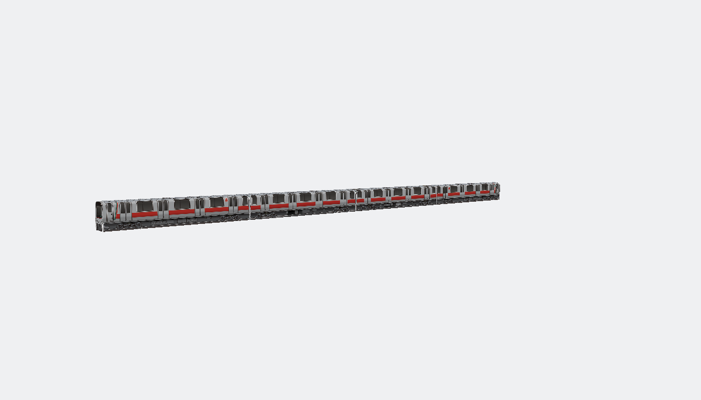
图加载失败修后
#487 tokyu-5080
✅ 已推
✅ 已推 提交
c8d4b8d4（models-pipeline）MC 原话：胶耳未清
根因：端件裁切框把纸模粘贴耳框进贴图，端盖 UV 拉满车宽后在司机面两侧形成通高白竖条；贴图问题，非几何。面 77.5–79.5%→100%。
修法：端件框横向收紧到端面轮廓、只取端面本身，裙板白纸残留同步清；手术式 GLB 补丁，POSITION 逐字节与 v1 一致。

修后
#488 tokyu-6000
✅ 已推
✅ 已推 提交
e901004a（models-pipeline）MC 原话：胶耳未清
根因：端件裁切框把纸模粘贴耳框进贴图，端盖 UV 拉满车宽后在司机面两侧形成通高白竖条；贴图问题，非几何。贯通端面仅 28.6–28.8% 宽，司机面 73.8%→100%。
修法：端件框横向收紧到端面轮廓、只取端面本身；手术式 GLB 补丁。接替专员修正了原 v2 的裁切错误：贯通端面（car1 end1、car2 front/end1、car3 front）原按司机面比例 (48–52, 327–346) 裁，…
图加载失败
'">修后
#489 tokyu-6020
✅ 已推
✅ 已推 提交
e266d63b（models-pipeline）MC 原话：贴图颠倒
根因：仅 car1 前脸整面全倒（与 2020 同款）。
修法：flip_band，只翻 rows [0,292)；修后与实车 6721 一致，橙角左下可见。car2/car3 贯通端不动。

修后
#490 tokyu-7000
✅ 已推
✅ 已推 提交
64882f15（models-pipeline）MC 原话：编组错误
根因：辆数、两端司机面均对；错在 car1 的 −X 壁、car3 的 ＋X 壁司机门落在贯通端（全车共用一张 side 贴图，两壁 UV 方向相反，司机门在 u≈0）。
修法：只对错的那面做 U 镜像（U→1−U，逐顶点，只动 side 图元独立的 TEXCOORD_0，V 不动；side 贴图无文字/logo，镜像安全）。数值验证：两车两壁 u＝0（司机门）均落在司机端；目检四面壁司机门均紧邻司机端。

修后
#500 toyamatihou-9000
✅ 已推
✅ 已推 提交
ad2dc24c（models-pipeline）MC 原话：其他：楔形
根因：纸模端盖是全平直竖板，楔形只画在侧面贴图里。
修法：楔形 warp R＝0.50、edge_back F＝−0.15，两端。

修后
#506 tukubaexp-tx2000
✅ 已推
✅ 已推 提交
71bc8b20（models-pipeline）MC 原话：其他：く
根因：纸模端盖是全平直竖板，く只画在侧面贴图里。
修法：く warp R＝0.30、centre_back F＝＋0.18（2面折れ），仅 car1；只修く头型，不扩编（图纸只有 3 张净片，缺 2400/2500/2600 无图）。…

修后
#512 wakayama-2270
✅ 已推
✅ 已推 提交
fbbdbedc + ce6eee44（models-pipeline）MC 原话：胶耳未清
根因：端件裁切框把纸模粘贴耳框进贴图，端盖 UV 拉满车宽后在司机面两侧形成通高白竖条；贴图问题，非几何。两司机面各一侧白色梯形耳（带斜折线），面偏心、车灯偏左，面 79.8% / 79.2%。
修法：两框收紧（car1 0..384、car2 98..479）＋两裙板同裁；面心回正、车灯回正、联挂器不移位。分两 commit（car1、car2 各一）。

修后
#515 yakuri-ko1
✅ 已推
✅ 已推 提交
101bd111（models-pipeline）MC 原话：胶耳未清
根因：端件裁切框把纸模粘贴耳框进贴图，端盖 UV 拉满车宽后在司机面两侧形成通高白竖条；贴图问题，非几何。两端同形，风挡区以上两侧浅灰梯形耳（带斜折线），面约 69%（风挡区）。
修法：按图纸实测面轮廓线（框内竖线列 26/145 → 贴图列 67/370），行 0..163 的耳逐行向内填色（风挡区填框深色、橙面区填橙色），行 ≥164 一字不动；frontf 取新 front 水平镜像。

修后
#520 yokohamasub-10000
✅ 已推
✅ 已推 提交
36ff81a3（models-pipeline）MC 原话：贴图颠倒
根因：前脸本身正立，是端盖 UV 取值错了（v 0–0.847 把屋顶受电弓条框进端盖顶部 32%、前脸压扁）。
修法：裁切前脸行（rows 202–610）＋UV v/0.847，前脸占满端盖：表示/头灯上、风挡、青绿带、银板、橙尾灯下。⚠️ 左缘胶耳未修（x 0–43，约 12.8% 宽白竖带）：任务定本车只修贴图颠倒，…
⚠️ 左缘胶耳未修（x 0–43，约 12.8% 宽白竖带），留待以后单独处理。

修后
#521 yokohamasub-3000v
✅ 已推
✅ 已推 提交
7b9761dc（models-pipeline）MC 原话：编组错误（MC 写 yokohamasub-3000，实为 yokohamasub-3000v，index 已核实）
根因：翻转车 car2 侧面帆形三角朝向贯通端，与 car1 相向（“><”）；实车三组照片核实各车三角统一朝あざみ野端（“>>>”）。
修法：两侧面贴图每面帆的浅蓝楔以双叶门中心镜像；海鸥剪影先 inpaint 再原位重画（暗蓝像素与原图完全一致，无重影）。辆数 2 vs 实车 6，3612–3615 中部车无图纸，修不了。

修后